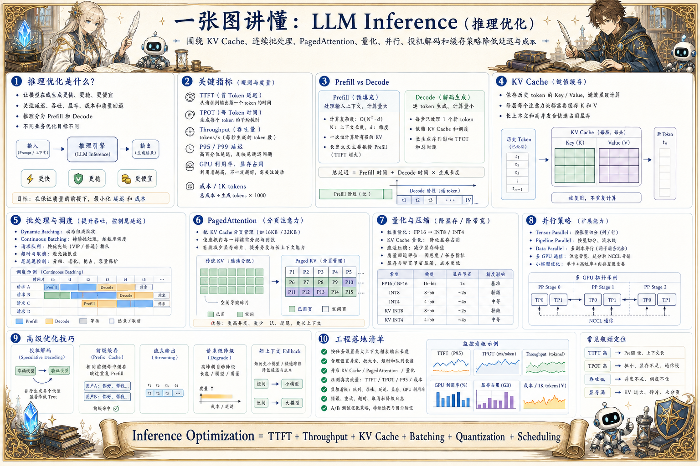
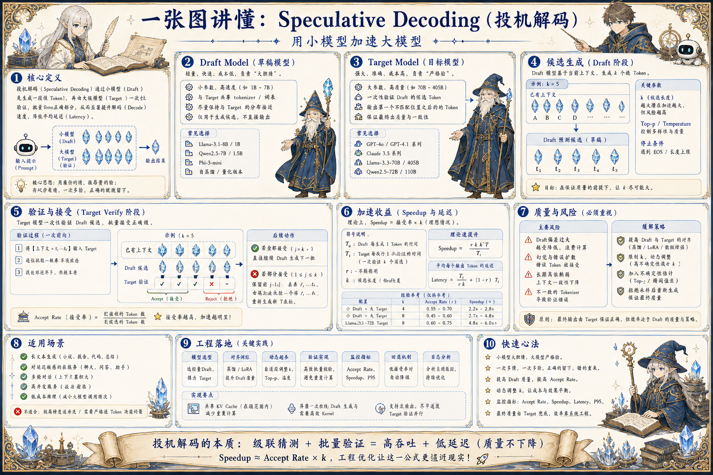
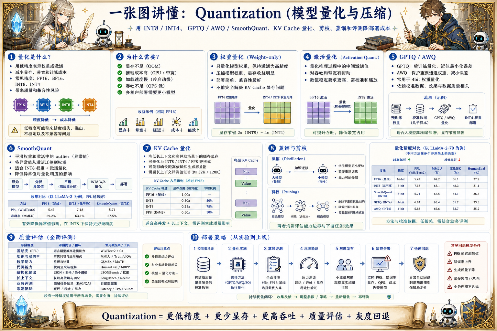
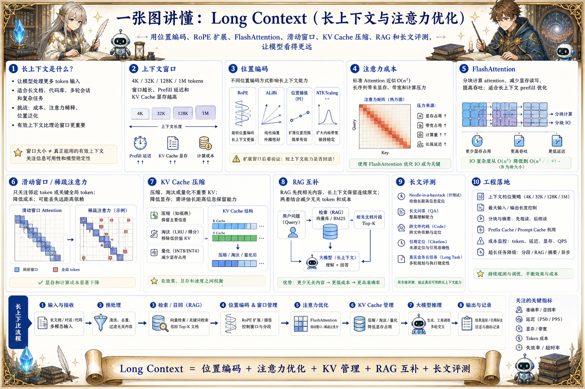

大模型推理 · Architecture
Model Architecture：模型骨架
把 Transformer、注意力、上下文长度、MoE、多模态和推理成本放进一张架构视图里。
文章待补充从模型骨架、推理优化、KV Cache、调度、投机解码、量化到长上下文，关注延迟、吞吐、成本和质量取舍。
四条线拆分成独立页面，当前页面只展示“大模型推理”专题内的完整图解。
从 RAG、Prompt、结构化输出到 Agent 运行、人审和产品体验，聚焦把模型能力做成可用产品。
把模型网关、协议、安全、向量库、可观测、训练基础设施、模型服务和 LLMOps 作为生产底座来整理。
从模型骨架、推理优化、KV Cache、调度、投机解码、量化到长上下文，关注延迟、吞吐、成本和质量取舍。
围绕 Tokenizer、学习范式、数据治理、预训练、监督微调、偏好对齐和蒸馏，解释模型能力如何被训练出来。
从模型骨架、推理优化、KV Cache、调度、投机解码、量化到长上下文，关注延迟、吞吐、成本和质量取舍。
把 Transformer、注意力、上下文长度、MoE、多模态和推理成本放进一张架构视图里。
文章待补充
从首 token 延迟、吞吐、KV Cache、批处理、量化、投机解码、并行和缓存看模型推理性能。
文章待补充理解 Prefill、Decode、Key/Value 缓存、显存占用、分页管理、连续批处理和长上下文推理性能。
文章待补充梳理动态批处理、continuous batching、队列优先级、prefill/decode 分离、SLA、尾延迟和容量规划。
文章待补充
理解 draft model、target model、候选 token、并行验证、接受率、加速比、质量风险和适用场景。
文章待补充
从权重量化、激活量化、GPTQ、AWQ、SmoothQuant、KV Cache 量化、蒸馏和质量评估理解压缩取舍。
文章待补充
理解上下文窗口、RoPE、位置插值、FlashAttention、滑动窗口、KV 压缩、RAG 互补和长文评测。
文章待补充